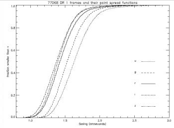
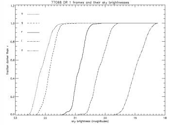

Seeing and sky brightness affect both the completeness of the SDSS and the accuracy of its star/galaxy separation. Seeing is defined here as the effective width of the point spread function (see section 4.3 of the EDR paper). The following plots show the fraction of DR1 fields exceeding a given seeing and sky brightness.
| Seeing | Sky brightness |
|---|---|
|  |  |
These are the r-band quartiles:
| Parameter | Lower quartile | Median | Upper quartile |
|---|---|---|---|
| PSF width | 1.58" | 1.43" | 1.30" |
| Sky brightness | 20.70 mag | 20.86 mag | 21.03 mag |